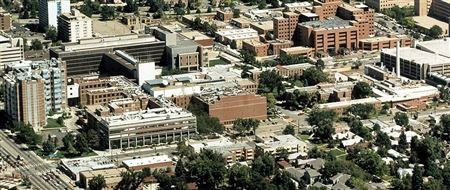

Janet Maass moved from Wisconsin in May of 1980 and began working at University of Colorado Health Sciences Center (UCHSC), which was located at 9th & Colorado. In August a mailing list of all hospitals with histology laboratories in Colorado and Wyoming was put together. At that time only seven hospitals in Wyoming had the code in the book listing all hospitals for pathology. Carlene Van Sickle, manager of the pathology departments, located money from the pathology department to pay for postage and airfare for a speaker to organize an educational meeting for the histology profession.
Janet contacted Dezna Sheehan to present the day lecture in September or October of 1980. She presented “Self Assessment of Special Staining Technics”. The handout was 17 pages to the 81 slides she showed. She used lantern slides which had two to four pictures on each slide. Lantern slides are 3 x 4 inch glass slides with a foil tape holding the two pieces of glass together. Janet could not locate a lantern slide projector so a microfiche was used to show the slides. The educational meeting was held in the Nursing Auditorium at UCHSC. Dezna Sheehan stayed at Janet’s house for the weekend. She was taken to the El Dorado outside of Evergreen, so she could see some of the mountains as this was her first time to Colorado.
At the meeting a three page informational survey was given to each person asking for it to be filled out that day and placed in a box located on the registration table. It asked questions to assess what areas of training were wanted in the Rocky Mountain region.
Following Dezna’s presentation an organization meeting was led by Janet Maass. She asked whether we wanted to form a state society. The majority of the attendees wanted to. She then asked general questions as to what they wanted to pay for dues, how often to meet, and where and when they wanted to meet. Janet was elected as chairman pro tem and appointed the histology technicians from UCHSC, VA and Rose Medical Center (at that time they were all within two blocks of each other) to write the by-laws for the society, using the information that was discussed. At that time the name of the society was to be Colorado Society of Histotechnology, to be different than the National Society for Histotechnology.
The following spring, a meeting was held. The by-laws were adopted by going through each line and all those in attendance could comment on them. The authors of the original by-laws (PDF on the current site) were Hank Sakara (UCHSC), Julia Johnson (UCHSC), Judy Tuffield (UCHSC), Sue Stangler (Rose Medical Center), Pat Bell (VA Hospital), and Janet Maass (UCHSC).
Officers were elected. President: Janet Maass; Vice President: Pat Bell; Secretary: George Hoernig or Sue Steghner; Treasurer: Yen-Yen Yuan.
